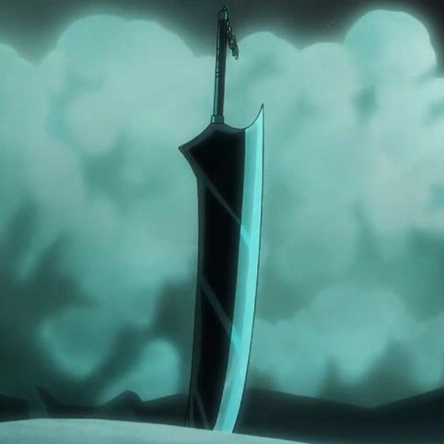
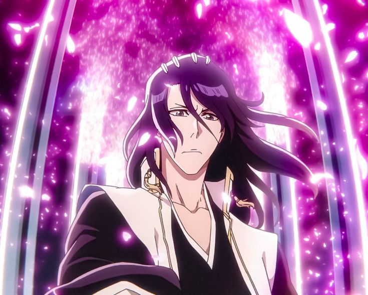
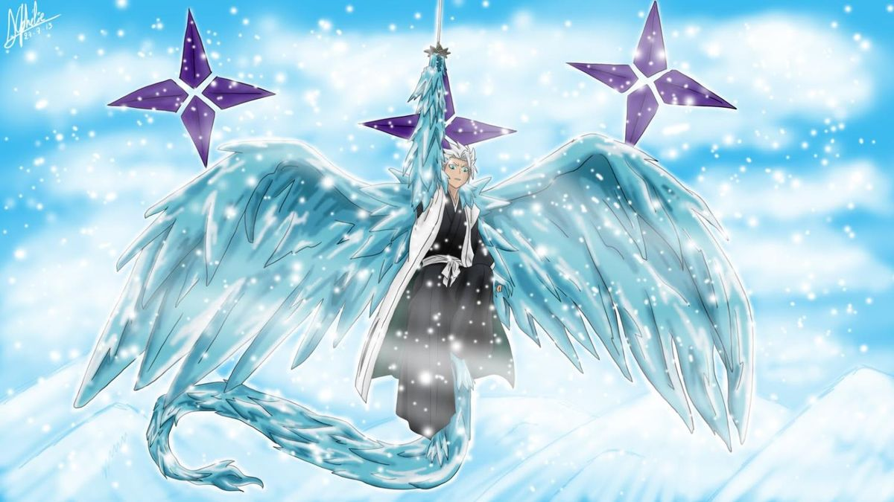
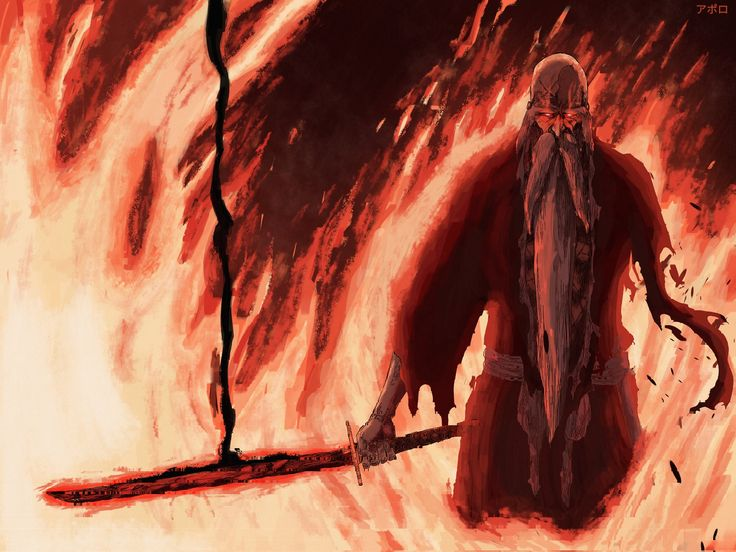
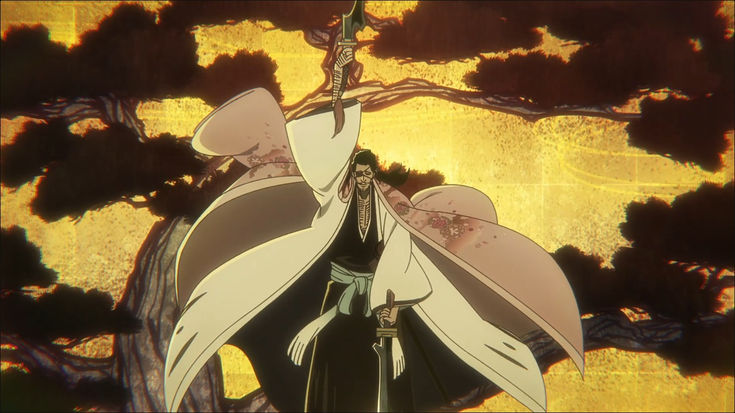
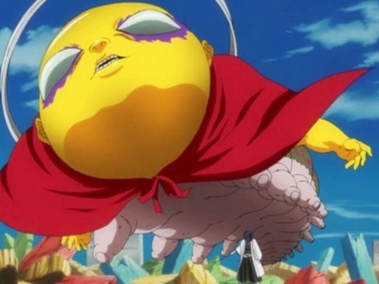
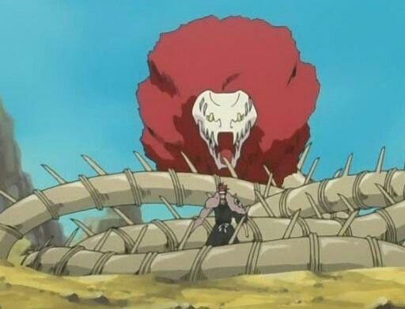
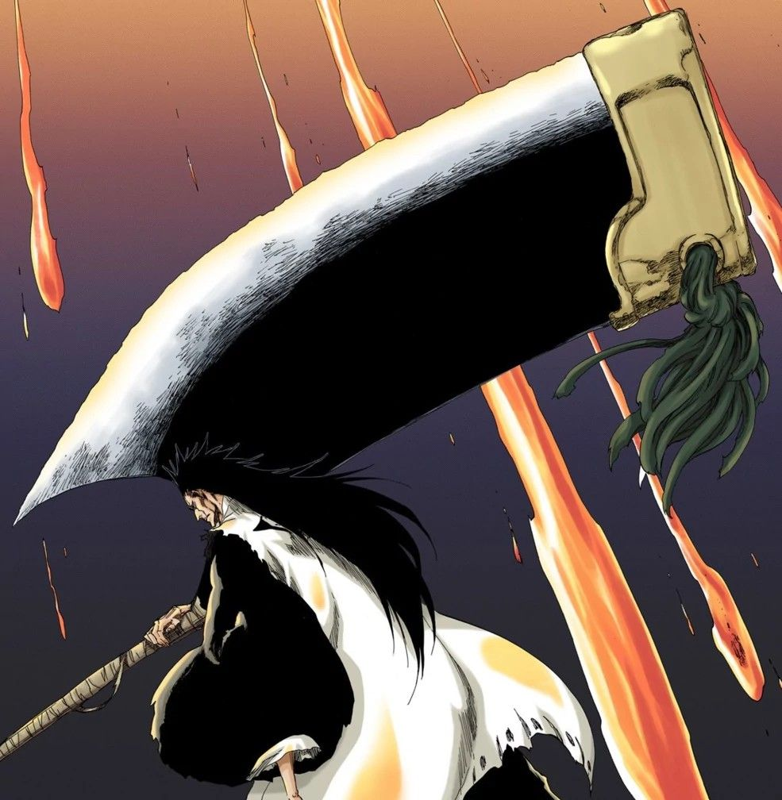

Bleach
Bankai en Bleach
El Bankai es la forma final y mas poderosa de una zanpakuto, la liberacion total del alma del Shinigami llevada al limite. En Bleach no es solo una mejora de dano: suele cambiar por completo el estilo de combate, la presencia del usuario y el campo de batalla entero.
Volver a BleachConcepto general
La liberacion maxima de las zanpakuto
Dominar un Bankai significa llevar la relacion con la zanpakuto al nivel mas alto posible. No basta con tener poder bruto: hace falta comprender el espiritu del arma, materializarlo por completo y controlar una forma de combate que muchas veces resulta mas peligrosa incluso para el propio usuario.
Por eso los Bankai suelen marcar los momentos mas grandes de Bleach. Cuando uno aparece, la pelea deja de ser normal y entra en otra escala. Algunos convierten el escenario en un infierno de fuego, otros en una lluvia de cuchillas, otros rompen la mente del rival o deforman el cuerpo del propio Shinigami.
Que es un Bankai
Definicion
La liberacion total del poder espiritual
El Bankai es la forma final de una zanpakuto. Multiplica el poder del Shinigami, transforma por completo el arma y, en muchos casos, cambia tambien la apariencia, el ritmo de combate o incluso el cuerpo del usuario. Alcanzarlo puede llevar anos de entrenamiento y dominarlo de verdad es todavia mas dificil.
- Multiplica de forma brutal la capacidad ofensiva y espiritual.
- Puede alterar el arma, el entorno o la propia forma del usuario.
- Es uno de los grandes simbolos de elite dentro del Gotei 13.
Bankai mas importantes

Ichigo Kurosaki - Tensa Zangetsu
Velocidad, presion y dano concentradoDe que va: uno de los Bankai mas iconicos de toda la serie.
Efecto: en vez de volverse gigantesco, comprime el poder de Ichigo en una forma mas pequena y mucho mas rapida.
Importancia: fue un Bankai conseguido en tiempo record y define gran parte del crecimiento de Ichigo.

Byakuya Kuchiki - Senbonzakura Kageyoshi
Elegancia letal y control total del espacioDe que va: transforma el campo de batalla en un oceano de cuchillas invisibles como petalos.
Efecto: Byakuya controla millones de hojas cortantes a distancia y puede encerrar al rival en un dominio casi imposible de escapar.
Rasgo: es uno de los Bankai mas refinados, precisos e iconicos de Bleach.

Toshiro Hitsugaya - Daiguren Hyorinmaru
Hielo absoluto y evolucion del usuarioDe que va: el gran Bankai de hielo de Hitsugaya, uno de los capitanes mas prometedores.
Efecto: congela a gran escala, crea una presencia draconica y en su desarrollo mas avanzado lleva al usuario a una forma adulta temporal.
Rasgo: mezcla talento natural, crecimiento y una capacidad de control helado brutal.

Genryusai Yamamoto - Zanka no Tachi
Fuego final y destruccion absolutaDe que va: posiblemente el Bankai mas destructivo de fuego de toda la obra.
Efecto: concentra las llamas en el filo hasta un nivel tan extremo que todo puede quedar reducido a cenizas.
Riesgo: su calor es tan salvaje que llega a afectar el entorno entero, como si secara el mundo.

Shunsui Kyoraku - Katen Kyokotsu: Karamatsu Shinju
Teatro tragico y reglas de muerteDe que va: uno de los Bankai mas inquietantes y raros de la serie.
Efecto: convierte la pelea en una obra teatral oscura con fases, heridas compartidas y una sentencia final dificil de contrarrestar.
Rasgo: es tan peligroso que su usuario evita activarlo cerca de aliados.

Mayuri Kurotsuchi - Konjiki Ashisogi Jizo
Veneno, mutacion y experimentacion vivaDe que va: un Bankai monstruoso y grotesco, totalmente ligado a la mente cientifica de Mayuri.
Efecto: despliega una criatura toxica gigante capaz de arrasar con veneno y evolucionar durante el combate.
Rasgo: no es un Bankai estable o noble, sino uno de los mas alterables y retorcidos.

Renji Abarai - Soo Zabimaru
Serpiente osea y potencia renovadaDe que va: la forma completa del Bankai de Renji tras su gran evolucion personal.
Efecto: combina alcance bestial, fuerza destructiva y una estructura mucho mas completa que sus versiones iniciales.
Importancia: representa como Renji pasa de promesa impulsiva a combatiente de primer nivel.

Kenpachi Zaraki - Nozarashi
Instinto puro y fuerza incontrolableDe que va: un Bankai que no parece refinado, sino una liberacion animal de destruccion.
Efecto: dispara la fuerza fisica de Kenpachi hasta un nivel monstruoso y lo acerca a perder el control humano.
Rasgo: es la expresion perfecta de un personaje que siempre lucho por puro instinto.
Bankai especiales y misteriosos

Misterio clave
Sosuke Aizen y el Bankai nunca mostrado
Aizen posee una de las zanpakuto mas rotas de toda la serie, Kyoka Suigetsu, pero nunca llega a mostrar su Bankai. Eso alimenta uno de los misterios mas famosos de Bleach: si su Shikai ya podia dominar los cinco sentidos y manipular batallas enteras, su Bankai habria sido algo aterrador incluso para los capitanes mas fuertes.
- Su ausencia hace aun mas intimidante al personaje.
- La serie deja claro que Aizen no necesitaba ensenarlo para estar por encima de casi todos.
- Es uno de los debates eternos entre fans de Bleach.
Bankai vs Shikai
Shikai
Primera liberacion
El Shikai ya entrega la habilidad distintiva de la zanpakuto y puede ser peligrosisimo, pero sigue siendo solo la primera gran puerta del poder espiritual del usuario.
Bankai
Forma final
El Bankai multiplica el poder, transforma la pelea y exige un dominio mucho mayor. Es una liberacion que cambia por completo la forma en la que un personaje impone su reiatsu sobre el mundo.
Por que es tan raro conseguirlo
La gran mayoria de Shinigamis nunca llega a este nivel. No basta con tener talento o fuerza, porque el Bankai exige una union real con la zanpakuto, anos de entrenamiento y la capacidad de soportar un poder que a veces puede destrozar al propio usuario si no esta preparado.
- Solo una minoria del Gotei 13 lo domina.
- El control completo puede tardar muchisimo mas que el despertar inicial.
- Algunos Bankai cambian el cuerpo, el estado mental o el entorno entero.
Curiosidades
- Ichigo logro Bankai a velocidad absurda, algo casi imposible para un Shinigami normal.
- Kenpachi lo despierta casi por instinto, encajando totalmente con su personalidad salvaje.
- Shunsui evita usar el suyo a la ligera, porque puede afectar a cualquiera que este cerca.
- Yamamoto posee uno de los Bankai mas temidos, no solo por dano, sino por escala apocaliptica.
- Aizen nunca mostro el suyo, y esa ausencia lo hace aun mas legendario.
Resumen rapido
- Bankai = forma final de la zanpakuto.
- Muy pocos Shinigamis consiguen dominarlo.
- Cambia la batalla por completo y muchas veces altera el escenario entero.
- Los mejores Bankai de Bleach son parte central del carisma de la serie.